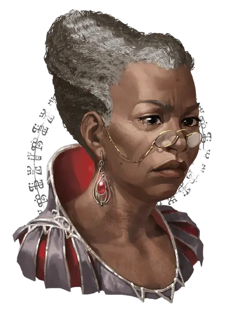

Наксин Драткала
Naxene Drathkala
Средний Гуманоид (Человек тёрами), нейтрально-добрый, именной НИП

Класс Доспеха 10 (13 с доспехом мага)
Хиты 27 (6к8)
Скорость 30 футов
| мод | спас | ||
|---|---|---|---|
| СИЛ | 8 | −1 | −1 |
| ЛОВ | 11 | +0 | +0 |
| ТЕЛ | 11 | +0 | +0 |
| мод | спас | ||
|---|---|---|---|
| ИНТ | 17 | +3 | +3 |
| МДР | 12 | +1 | +1 |
| ХАР | 11 | +0 | +0 |
Навыки История +5, Магия +5
Чувства пассивное Восприятие 11
Языки Общий, Дварфийский, Драконий, Эльфийский
Опасность 0
Бонус мастерства +2
Особенности
Информация для отыгрыша. Зерновые Золотых Полей необходимы для выживания Глубоководья, поэтому Бдительный Орден Магов и Защитников послал Наксин убедиться, что ферма при храме достаточно защищена. Поначалу она восприняла это как наказание, но сейчас она наслаждается тишиной и покоем.
Идеал. : «Нет такой проблемы, которая не могла бы быть решена с помощью магии».
Привязанность. : «Я очень уважаю леди Лаэраль Сильверхэнд из Глубоководья. Она и альянс лордов принесут так необходимые этим землям закон и порядок.»
Слабость. : «Я слишком умна, чтобы в чём-либо ошибаться.»
Действия
Посох. . Рукопашная атака оружием: +1 к попаданию, досягаемость 5 фт., одна цель. Попадание: 2 (1к6-1) дробящего урона или 3 (1к8-1) дробящего урона, если использовать посох двумя руками.
Использование заклинаний. Наксин является заклинателем 6 уровня. Её способность заклинателя основана на Интеллекте (Сл спасброска от заклинания 13; +5 к броску на попадание). Она обладает следующими заготовленными заклинаниями волшебника:
• Неограниченно: огненный снаряд [fire bolt] (1к10 урона огнём), свет [light], волшебная рука [mage hand];
• 1/день каждое: доспехи мага [mage armor], волшебная стрела [magic missile], внушение [suggestion].